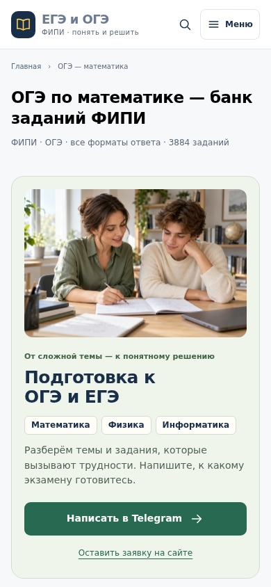
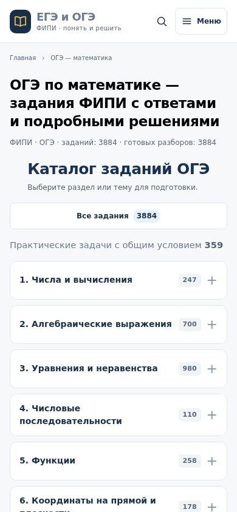

Каталог ОГЭ по математике: опубликовано 19.11.2026
Выбор тем и задания размещены перед баннером подготовки и рекламой. Первый экран сообщает о готовых решениях и показывает динамические количества по всей подборке. Описание перед заданиями сокращено.
Открыть сайт · Проверки · Публичные маршруты
| На ширине 390 px | До | После |
|---|
| Начало каталога /oge | 852 px | 263 px |
| Первое задание темы 1.2 | 1395 px | 763 px |
На телефоне
До
После, рабочий сайт
Проверки
40 модульных тестов; 108 вариантов каталогов в предпросмотре; 24 контрольных маршрута с полным совпадением HTML/API/Sitemap/robots; 20 браузерных отображений и три сценария на рабочем сайте; 24 проверки аналитики в предпросмотре. Количество решений проверено изменением и восстановлением публикации только в изолированной SQLite.
12940 решений по всем полям и 147 исходных HTML сохранены, integrity_check=ok. Предпросмотр остановлен, временные базы удалены. В браузере блокировались настоящая аналитика, реклама и записи; использован Chrome Linux с эмуляцией, не аппаратный iPhone.
Переобход информатики
Восемь обновлённых задач проверены: HTTP 200, index,follow, собственный canonical и решение в серверном HTML. POST API Яндекс Вебмастера вернул HTTP 504 для всех восьми адресов. Квота осталась 10/10; заявки в доступной очереди не появились. Постановка на переобход не подтверждена.
Ответы API.
Рост трафика, конверсии и дохода после этой публикации ещё не измерен. Первый полный московский день для оценки — 20.11.2026.